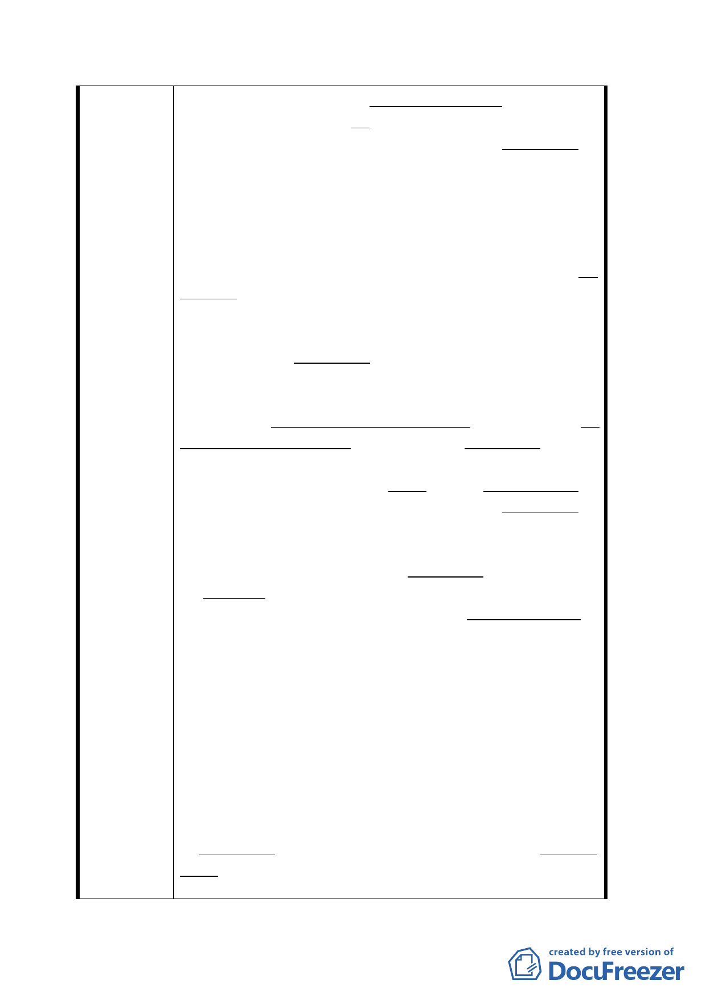

之直接干與、卻影響了日産管理委員會、對漢中段
土地處分之運作。該會因當時値軍事至上之特殊環
境、該地區成為衆認之非正式軍區、對貴陽基地之
承購問題、一再而拖。自日産管理委員會至嗣後継
承管理之國有財産局、時隔逾半世紀敝人等之申請
承購建築物基地案、始終未獲早應有之合理解決、
及妥善之法律救助。郝柏村將軍任行政院院長期
間、曽通令停止出售國有土地、更使本案再為拖延。
（５）國有財産局、曽公開明確聲明、肯定出售貴
陽基地： 於本年七月二十九日台北市都市計畫委
員會専案小組第二次審査會議時、代表國有財産局
出席與會之官員、對張委員之質詢、曽公開聲明、
明確肯定出售貴陽基地予申購者、並證實已受理両
件承購申請案。有会議記録可佐證。
（６）法律之前人人應為平等： 對敝人等於本年七
月初旬、依國有財産法第 52 條之 2 之規定、提出承
購國有非公用不動産之申請、承購貴陽基地。両個
多月後國有財産局竟於本年九月十三日以〔依台北
市政府目前規劃方式、“將即”變更漢中段土地為
廣場用地、係公共設施用地（＝ 成為 公用土地）〕
為由而註銷並退囘申請承購案。台北市政府是否能
順利変更為廣場用地、尚屬未確定之未来或可發生
而事實上尚未發生之非事實假設状態。
但 31 天後、該局於 10 月 14 日台財産北處字第
0930039182 號公告時、不但仍舊以非公用不動産状
態公開標售、亦函邀敝人等歓迎参與標購、漢中段
土地（含貴陽基地）。在民主政治体制下之國有財産
局、竟公然忽視“法律之前人人應平等”憲法上之
大原則、至為不當及矛盾。
敝人等所有自始完全合法之建築物與基地之今日處
境、應帰因相関政府主管機関、従未為適宜之関懐
及合情合理之慎重考慮、應為而未為之不當措施所
致。雖有上述（３）及（４）之不幸縁故之影響、
政府應及早給與妥善之法律救助以彌補半世紀來、
敝人等所蒙受附至為不當而不應有之不幸遭遇。
因貴陽基地上之建築物自始為完全合法、與漢中段
土地之衆多違建、毫無任何関係。両者早應完全割
開、分成為両個不同案件、個別處理。台北市政府
三一